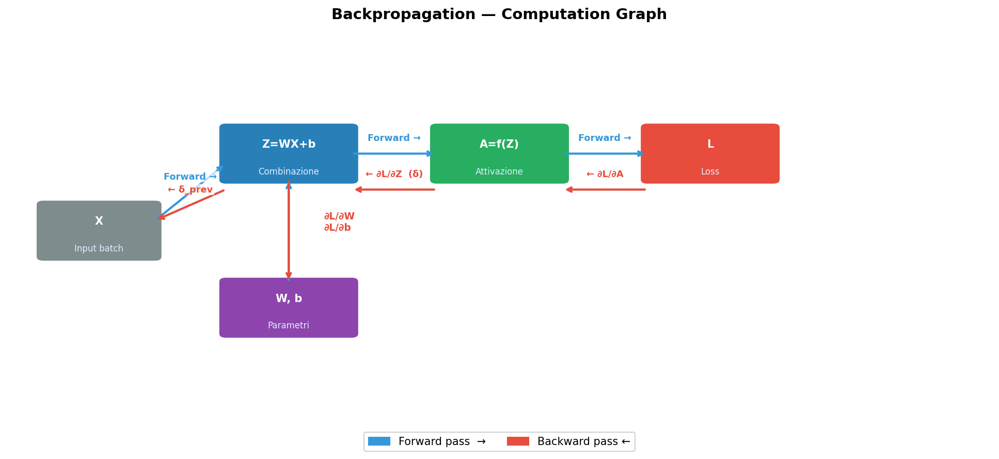

Laboratorio 13
Backpropagation — la Rete Impara
Soluzione del Laboratorio 12
Il parsing del CSV con il doppio getline:
std::getline(f, linea); // salta l'intestazione
while (std::getline(f, linea)) {
std::stringstream ss(linea);
std::string valore;
std::getline(ss, valore, ','); // il primo campo è la label
val = std::stoi(valore);
np = 0;
while (std::getline(ss, valore, ',')) // i restanti sono pixel
pixs(np++, 0) = std::stoi(valore);
add_element(pixs, val);
}E le due normalizzazioni “alla Rashid”, che evitano gli estremi della sigmoide:
Lo shuffle permuta gli indici perché permutare 60.000 immagini significherebbe copiare 188 MB a ogni epoca.
Obiettivo di Oggi
Questo è il cuore del corso. La rete sa prevedere e sa leggere i dati, ma non sa ancora imparare. Oggi chiudiamo il cerchio: backward() in ogni layer — la backpropagation — e update_parameters(), che consegna i gradienti all’ottimizzatore.
Loss e Optimizer li avete già scritti nel Lab 10, come Strategy isolate. Oggi entrano in gioco: la rete le userà attraverso l’interfaccia, senza sapere quale implementazione ha davanti. Le derivate delle attivazioni le avete verificate numericamente nel Lab 03: oggi si capisce perché.
Alla fine vedremo la Loss scendere: la prova che tutto funziona.
Note
Sul tempo. È il laboratorio più denso del corso, anche dopo aver spostato Loss e Optimizer nel Lab 10: quattro backward() e la catena in Sequential. I due backward() delle attivazioni sono tre righe ciascuno e quasi identici: scrivete la sigmoide con cura, la tanh segue. Se il gradient check finale resta a casa, va bene: è raccomandato, non richiesto.
Il flusso completo
forward
inputs ──▶ Dense ──▶ Sigmoid ──▶ Dense ──▶ tanh ──▶ predizione
│
Loss(pred, target)
│
dWt ◀── Dense ◀── Sigmoid ◀── Dense ◀── tanh ◀── d_loss
backward
│
update_parameters(opt)Ogni layer riceve il delta da destra, calcola il proprio gradiente e passa a sinistra il delta per il layer precedente.
Backpropagation — Computation Graph

Task 1: backward diventa puro virtuale
Nel Lab 09 avevamo messo un corpo di default. Ora ogni layer deve implementarlo, e in layer.hpp diventa:
Aggiungete anche #include "./optimizers.hpp" in testa a layer.hpp.
update_parameters ha un corpo vuoto di default, non = 0: una sigmoide non ha pesi da aggiornare e non deve essere costretta a dichiararlo. È il polimorfismo che risolve quello che un dynamic_cast risolverebbe male (Lezione 16).
Task 2: Le due formule del DenseLayer
Con la notazione della Lezione 3, per il layer \(l\):
\[ \frac{\partial L}{\partial W_t} = \delta^{(l)} \cdot \left(a^{(l-1)}\right)^{T} \qquad \delta^{(l-1)} = W_t^{T} \cdot \delta^{(l)} \]
dove \(a^{(l-1)}\) è l’input di questo layer — cioè esattamente ciò che inputs_ptr sta puntando.
Matrix<ntype>& backward(const Matrix<ntype>& del_l) override {
// del_l è un vettore colonna, (*inputs_ptr).transpose() è un vettore riga:
// il loro prodotto è una MATRICE, delle stesse dimensioni di Wt
dWt = del_l * (*inputs_ptr).transpose();
// il delta da passare al layer precedente
delta_l = Wt.transpose() * del_l;
return delta_l;
}Due righe. Ecco perché il framework ha rinunciato al bias e al batching: la formula del gradiente è tutta qui.
Note
Nessuna divisione per \(N\): il batch ha dimensione 1 (Lab 12), quindi non c’è alcuna media da fare. Se un giorno introdurrete i mini-batch, è qui che andrà il / N.
Perché la trasposta e non l’inversa
Wt.transpose() è la “magia” della Lezione 3. L’istinto sarebbe invertire \(W_t\) per tornare indietro, ma:
- l’inversa esiste solo per matrici quadrate, e
Wtè \([N_{nodes} \times N_{in}]\) - calcolarla costa \(O(n^3)\), contro \(O(1)\) della trasposta (che in Eigen non copia nemmeno nulla: è una vista)
La trasposta funziona perché non stiamo invertendo la trasformazione, stiamo ridistribuendo la colpa: ogni peso riceve una quota di errore proporzionale al suo contributo in avanti.
Task 3: backward delle attivazioni
Un layer di attivazione non ha pesi: moltiplica il delta per la derivata locale, elemento per elemento.
Notate l’eleganza: nessuna delle due ricalcola la funzione. Entrambe riusano outputs, che il forward() ha già scritto. La derivata della sigmoide si esprime in funzione del suo stesso valore, e questo risparmia un esponenziale per ogni neurone per ogni immagine.
Warning
.array() è obbligatorio. Con * su Matrix avreste un prodotto matriciale: compila, gira, e dà numeri sbagliati senza dire nulla.
Task 4: Sequential::backward
Il ciclo del forward, letto al contrario:
Matrix<ntype>& backward(const Matrix<ntype>& d_loss) override {
if (layers.empty())
throw std::runtime_error("[ERROR] backward pass su una rete vuota.");
// si parte dall'ultimo layer
Matrix<ntype>* current_grad = &(layers.back()->backward(d_loss));
// e si risale fino al primo
for (int i = static_cast<int>(layers.size()) - 2; i >= 0; --i)
current_grad = &(layers[i]->backward(*current_grad));
return *current_grad;
}Warning
L’indice del ciclo è int, non size_t. Con un tipo senza segno la condizione i >= 0 è sempre vera e il ciclo non termina mai. È il bug classico dei cicli a scendere.
Loss e Optimizer: già pronti dal Lab 10
Nel Lab 10 avete scritto loss.hpp e optimizers.hpp e li avete testati da soli. Oggi li includete, non li riscrivete. Rileggeteli un momento, perché adesso il loro disegno diventa chiaro:
MSELoss::backwardrestituisce \(\partial L/\partial p = 2(p - t)\) comeconst&a un membro: è la prima \(\delta\) che entra inSequential::backward.SDOptimizer::update(param, grad)prende un tensore alla volta, non “pesi e bias”. Così lo stesso ottimizzatore serve unDenseLayeroggi e, domani, un layer convoluzionale con quattro tensori diversi, senza modifiche.set_lr/get_lrsono puri virtuali perché servono allo scheduler, che avete già scritto anch’esso e che ilTrainerdel Lab 14 chiamerà a ogni epoca.
Il Pattern Strategy (Lezione 20) si vede tutto qui: il layer non sa se sta usando Steepest Descent o Adam. Conosce solo l’interfaccia.
Task 5: Collegare il layer all’ottimizzatore
Una riga, in DenseLayer:
Il layer non sa se sta usando Steepest Descent, Adam o RMSProp. Conosce solo l’interfaccia.
Task 6: La verifica — la Loss deve scendere
int main() {
rng.seed(42);
Sequential<double> net;
net.add(std::make_unique<DenseLayer<double>>(128, 784));
net.add(std::make_unique<SigmoidLayer<double>>());
net.add(std::make_unique<DenseLayer<double>>(10, 128));
net.add(std::make_unique<tanhLayer<double>>());
Matrix<double> X = Matrix<double>::Random(784, 1);
Matrix<double> Y = Matrix<double>::Zero(10, 1);
Y(3, 0) = 1.0;
Matrix<double> Z = net.forward(X);
MSELoss<double> loss;
SDOptimizer<double> opt(0.01);
double initial_loss = loss.forward(Z, Y);
std::cout << "Loss iniziale: " << initial_loss << std::endl;
for (int i = 0; i < 5; i++) {
const Matrix<double>& d_loss = loss.backward(Z, Y);
net.backward(d_loss);
net.update_parameters(&opt);
Z = net.forward(X); // ricalcolo per il giro successivo
}
double final_loss = loss.forward(Z, Y);
std::cout << "Loss finale: " << final_loss << std::endl;
if (final_loss < initial_loss)
std::cout << "[SUCCESS] La rete sta imparando!" << std::endl;
}Il criterio: la Loss finale deve essere minore di quella iniziale. Con un solo campione e cinque passi non è “apprendimento” — è la prova che i segni dei gradienti sono giusti e che la catena forward → loss → backward → update è collegata correttamente.
Se la Loss sale, il segno è invertito: controllate param -= lr * grad. Se resta identica, update_parameters non viene chiamato.
Il Gradient Check (raccomandato)
Il test definitivo per un backward(): confrontarlo con la definizione numerica di derivata.
\[ \frac{\partial L}{\partial w} \approx \frac{L(w + \varepsilon) - L(w - \varepsilon)}{2\varepsilon} \]
const double eps = 1e-5;
auto* dl = dynamic_cast<DenseLayer<double>*>(net.get_layer(0));
net.forward(X);
net.backward(loss.backward(net.forward(X), Y));
double analitico = dl->dWt(0, 0);
double w0 = dl->Wt(0, 0);
dl->Wt(0, 0) = w0 + eps; double L_piu = loss.forward(net.forward(X), Y);
dl->Wt(0, 0) = w0 - eps; double L_meno = loss.forward(net.forward(X), Y);
dl->Wt(0, 0) = w0; // ripristinare!
std::cout << "analitico: " << analitico
<< " numerico: " << (L_piu - L_meno) / (2 * eps) << std::endl;I due numeri devono coincidere entro 1e-6. Fatelo con ntype = double: in float l’errore di arrotondamento maschera il confronto.
Task da Completare
La soluzione di riferimento verrà discussa all’inizio della prossima lezione.